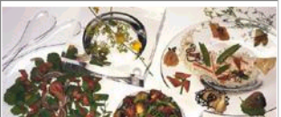
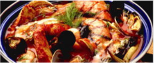
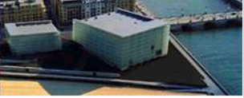
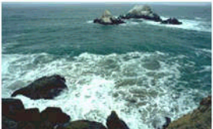

| Gastronomía | Restaurantes |  |
| Sidrerías y asadores | ||
| Bodegas de vino y txakoli |  | |
| Productos típicos | ||
| Escuelas de hostelería | ||
| Cultura | Archivos y bibliotecas |  |
| Museos | ||
| Palacios de congresos | ||
| Ferias de muestras | ||
| Ocio | Entretenimiento y diversion |  |
| Ocio cultural | ||
| Excursiones y deporte |